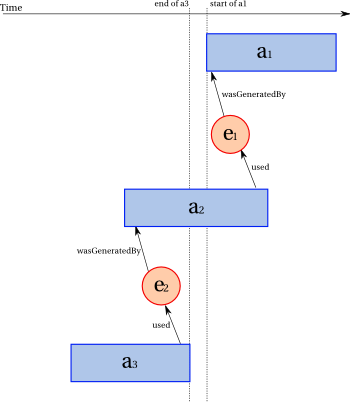

PROV-DM is a data model for provenance that describes
the entities, people and activities involved in
producing a piece of data or thing in the world. PROV-DM is
domain-agnostic, but is equipped with extensibility points allowing
further domain-specific and application-specific extensions to be
defined. PROV-DM is accompanied by PROV-N, a technology-independent
notation, which allows serializations of PROV-DM
instances to be created for human consumption, which facilitates the
mapping of PROV-DM to concrete syntax, and which is used as the basis for a
formal semantics of PROV-DM. This document introduces
further set of concepts underpinning the PROV-DM data model and defines constraints that well-structured provenance descriptions should follow and that provide an interpretation for these descriptions.
Status of This Document
This section describes the status of this document at the time of its publication. Other documents may supersede this document. A list of current W3C publications and the latest revision of this technical report can be found in the W3C technical reports index at http://www.w3.org/TR/.
This document is released internally by the Provenance Working Group.
This document is part of the PROV family of specifications, a set of specifications aiming to define the various aspects that are necessary to achieve the vision of inter-operable
interchange of provenance information in heterogeneous environments such as the Web. This document defines the PROV-DM data model for provenance, accompanied with a notation to express
instances of that data model for human consumption. Other documents are:
PROV-DM-CONSTRAINTS, a set of constraints applying to the PROV-DM data model,
PROV-N, a notation for provenance aimed at human consumption,
PROV-O, the provenance ontology: by means of a mapping of PROV-DM to the OWL2 Web Ontology Language, this specification provides a normative serialization of PROV-DM in RDF
PROV-AQ, provenance access and query: the mechanisms for accessing and querying provenance;
PROV-PRIMER: a primer for the PROV-DM provenance data model,
PROV-SEM: a formal semantics for the PROV-DM provenance data model.
Publication as an Editor's Draft does not imply endorsement by the W3C Membership. This is a draft document and may be updated, replaced or obsoleted by other documents at any time. It is inappropriate to cite this document as other than work in progress.
Provenance is defined as a record that describes the people,
institutions, entities, and activities, involved in producing,
influencing, or delivering a piece of data or a thing in the world. A
companion specification [PROV-DM] defines PROV-DM, a data model for
provenance, allowing such descriptions to be expressed.
PROV-DM has essentially be defined without any constraints [PROV-DM]. This document introduces a further set of concepts underpinning this data model and defines constraints that well-structured provenance descriptions should follow and that provide an interpretation for these descriptions.
This specification is one of several specifications, referred to as the PROV family of specifications, defining the various aspects
that are necessary to achieve the vision of inter-operable exchange of provenance:
A data model for provenance, which is presented in three documents:
PROV-DM (part I): the provenance data model itself, expressed in natural language [PROV-DM];
PROV-DM-CONSTRAINTS (part II): constraints underpinning the data model (this document);
PROV-N (part III): a notation to express instances of that data model for human consumption [PROV-N];
PROV-O: a normative serialization of PROV-DM in RDF [PROV-O], specified by means of a mapping to the OWL2 Web Ontology Language [OWL2-SYNTAX];
PROV-AQ: the mechanisms for accessing and querying provenance [PROV-AQ];
PROV-PRIMER: a primer for the PROV approach [PROV-PRIMER];
PROV-SEM: semantics of the PROV-DM data model [PROV-SEM];
1.1 Structure of this Document
TODO
In section 2, further concepts underpinning PROV-DM are introduced.
Section 9 successively review refined provenance descriptions, and examine their meaning, in light of the constraints introduced in previous sections.
1.2 Conventions
The key words "must", "must not", "required", "shall", "shall
not", "should", "should not", "recommended", "may", and
"optional" in this document are to be interpreted as described in
[RFC2119].
2. Data Model Refinement
Underpinning the PROV-DM data model is a notion of event, marking transitions in the world (when entities are generated, used, or destroyed, or activities started or ended). This notion of event is not first-class in the data model, but underpins many of its concepts and its semantics [PROV-SEM]. Thus, using this notion of event, we can provide an interpretation for the data model, which in turn can allow creators of provenance assertions to make their assertions more robust.
2.1 Time and Event
Time is critical in the context of provenance, since it can help corroborate provenance claims. For instance, if an entity is claimed to be obtained by transforming another, then the
latter must have existed before the former. If it is not the case, then there is something wrong with such a provenance claim.
Although time is critical, we should also recognize that provenance can be used in many different contexts: in a single system, across the Web, or in spatial data management, to name a
few. Hence, it is a design objective of PROV-DM to minimize the assumptions about time, so that PROV-DM can be used in varied contexts.
Furthermore, consider two activities that started at the same time
instant. Just by referring to that instant, we cannot distinguish
which activity start we refer to. This is particularly relevant if we
try to explain that the start of these activities had different
reasons. We need to be able to refer to the start of an activity as a
first class concept, so that we can talk about it and about its
relation with respect to other similar starts.
Hence, in our conceptualization of the world, an instantaneous event, or event for short, happens in the world and marks a change in the world, in its
activities and in its entities.
The term "event" is commonly used in process algebra with a similar meaning. For instance, in CSP [CSP], events represent communications or interactions; they are assumed to be atomic and
instantaneous.
2.1.1 Types of Events
Four kinds of instantaneous events underpin the PROV-DM data model. The activity start and activity end events demarcate the
beginning and the end of activities, respectively. The entity generation and entity usage events demarcate the characterization interval for entities. More
specifically:
An entity generation event is the instantaneous event that marks the final instant of an entity's creation timespan, after which
it is no longer available for use.
An entity usage event is the instantaneous event that marks the first instant of an entity's consumption timespan by an activity.
An entity destruction event is the instantaneous event that marks the initial instant of an entity's destruction timespan, after which
it no longer becomes available for use.
Tentative definition of destruction!
An activity start event is the instantaneous event that marks the instant an activity starts.
An activity end event is the instantaneous event that marks the instant an activity ends.
2.1.2 Event Ordering
To allow for minimalistic clock assumptions, like Lamport
[CLOCK], PROV-DM relies on a notion of relative ordering of instantaneous events,
without using physical clocks. This specification assumes that a partial order exists between instantaneous events.
Specifically, follows is a partial
order between instantaneous events, indicating that an instantaneous event occurs at the same time as or after another.
For symmetry, precedes is defined as
the inverse of follows. (Hence, these relations are reflexive and transitive.)
How such partial order is realized in practice is beyond the scope
of this specification. This specification only assumes that
each instantaneous event can be mapped to an instant in some form of
timeline. The actual mapping is not in scope of this
specification. Likewise, whether this timeline is formed of a single
global timeline or whether it consists of multiple Lamport's style
clocks is also beyond this specification. It is anticipated
that follows and precedes correspond to some ordering
over this timeline.
This specification introduces a set of "temporal interpretation"
rules allowing the derivation of instantaneous event ordering constraints from
provenance descriptions. According to such temporal interpretation,
descriptions must satisfy such constraints. We note that the
actual verification of such ordering constraints is outside the
scope of this specification.
PROV-DM also allows for time observations to be inserted in specific
descriptions, for each recognized instantaneous event introduced
in this specification. The presence of a time observation for a
given instantaneous event fixes the mapping of this instantaneous event to the
timeline. It can also help with the verification of associated
ordering constraints (though, again, this verification is outside the
scope of this specification).
2.2 Attributes in Entities and Beyond
When we talk about things in the world in natural language and even when we assign identifiers, we are often imprecise in ways that make it difficult to clearly and unambiguously report
provenance: a resource with a URL may be understood as referring to a report available at that URL, the version of the report available there today, the report independent of where it is
hosted over time, etc.
From a provenance viewpoint, it is important to identify a "partial state" of something, i.e. something with some aspects that have been fixed, so that it becomes possible to express its provenance, and what causes that thing, with these specific aspects to be as such.
It is the purpose of attributes in PROV-DM to help fix some aspect of entities.
Indeed, we previously defined
entities as things in the world one wants to provide provenance for;
we refine this definition as follows, using attribute-values to describe entities' "partial states", and linking them to the very existence of entities.
An entity is a thing in the world one wants to provide provenance for and whose situation in the world is represented by some attribute-value pairs; an entity's attribute-value pairs remain unchanged during an entity's characterization interval, which is defined as the period comprised between its generation event and its destruction event.
An entity fixes some aspects of a thing and its situation in the
world. An alternative entity may fix other aspects, and its provenance
may be different.
Different users may take different perspectives on a resource with
a URL. For each perspective, an entity may be expressed:
a report available at a URL: fixes the nature of the thing, i.e. a document, and its location;
the version of the report available there today: fixes its version number, contents, and its date;
the report independent of where it is hosted and of its content over time: fixes the nature of the thing as a conceptual artifact.
The provenance of these three entities may differ, and may be along the following lines:
the provenance of a report available at a URL may include: the act of publishing it and making it available at a given location, possibly under some license and access control;
the provenance of the version of the report available there today may include: the authorship of the specific content, and reference to imported content;
the provenance of the report independent of where it is hosted over time may include: the motivation for writing the report, the overall methodology for producing it, and the broad team
involved in it.
We do not assume that any entity is more important than any other; in fact, it is possible to describe the processing that occurred for the report to be commissioned, for
individual versions to be created, for those versions to be published at the given URL, etc., each via a different entity with attribute-value pairs that fix some aspect of the report appropriately.
Attributes are not restricted to entities, but they belong to a variety of PROV-DM objects, including activities, activity associations, responsibility chains, generations, usages, derivations, and alternates. Each object has its duration interval, and attribute-value pairs for a given object, are expected to be unchanged for the object's duration.
2.3 Description, Assertion, and Inference
PROV-DM is a provenance data model designed to express descriptions of the world.
A file at some point during its lifecycle, which includes multiple edits by multiple people, can be described by its type, its location in the file system, a creator, and content.
The data model is designed to capture activities that happened in the past, as opposed to activities
that may or will happen.
However, this distinction is not formally enforced.
Therefore, all PROV-DM descriptions should be interpreted as what has happened, as opposed to what may or will happen.
This specification does not prescribe the means by which descriptions can be arrived at; for example, descriptions can be composed on the basis of observations, reasoning, or any other means.
Sometimes, inferences about the world can be made from descriptions
conformant to the PROV-DM data model. When this is the case, this
specification defines such inferences, allowing new descriptions
to be inferred from existing ones. Hence, descriptions of the world
can result either from direct assertion or from inference
by application of inference rules defined by this specification.
We need to refine the definition of entity and activity, and all the concepts in general. This is ISSUE-223.
2.4 Account and AccountEntity
It is common for multiple provenance records to co-exist. For
instance, when emailing a file, there could be a provenance record
kept by the mail client, and another by the mail server. Such
provenance records may provide different explanations about something
happening in the world, because they are created by different parties
or observed by different witnesses. A given party could also create
multiple provenance records about an execution, to capture different
levels of details, targeted at different end-users: the programmer of
an experiment may be interested in a detailed log of execution, while
the scientists may focus more on the scientific-level description.
Given that multiple provenance records can co-exist, it is important
to have details about their origin, who they are attributed to, how
they were generated, etc. In other words, an important requirement is
to be able to express the provenance of provenance.
An account is a named bundle of provenance descriptions.
PROV-DM does not provide an actual mechanism for creating accounts, i.e. for bundling up provenance descriptions and naming them. Accounts must satisfy some properties:
An account can be seen as a container of provenance descriptions, hence its content may change over time.
If an account's set of descriptions changes over time, it increases monotonically with time.
A given description of e.g. an entity in a given account, in terms of its identifier and attribute-value pairs, does not change over time.
The last point is important and needs to be discussed by the Working Group.
It indicates that within an account:
It is always possible to add new provenance descriptions, e.g. stating that a given entity was used by an activity. This is very much an open world assumption.
It is not permitted to add new attributes to a given entity (a form of closed world assumption from the attributes point of view), though it is always permitted to create a new description for an entity, which is a "copy" of the original description extended with novel attributes (cf Example merge-with-rename).
There is no construct in PROV-DM to create such named bundles. Instead, it is assumed that some mechanism, outside PROV-DM can create them. However, from a provenance viewpoint, such accounts are things we may want to describe the provenance of. In order to be able to do so, we need to see accounts as entities, whose origin can be described using PROV-DM vocabulary. Thus, PROV-DM introduces the reserved type AccountEntity, defined as follows:
AccountEntity is the category of entities that are accounts, i.e. named bundles of provenance descriptions.
3. Constraints Applicable to PROV-DM
In [PROV-DM], a data model for provenance has been defined without introducing any constraint that this data model has to satisfy. In Section 2, various notions have been introduced, attributes, event, entity interval, activity interval, accounts, which underpin the PROV-DM data model. Using these notion, we explore the constraints
that the PROV-DM data model has to satisfy.
4. PROV-DM Definitional Constraints and Inferences
In this section, we revisit elements and relations of PROV-DM, and examine and examine the constraints associated with their definitions.
Proposing to remove the subsections in this section, since some have no constraints.
4.1 Element
4.1.1 Entity
An entity is a thing in the world one wants to provide provenance for and whose situation in the world is represented by some attribute-value pairs; an entity's attribute-value pairs remain unchanged during an entity's characterization interval,
i.e. a continuous interval between two instantaneous events in the world, namely its generation event and its destruction event.
Further considerations:
In order to describe something over several intervals, it is required to create multiple entities (either by direct
assertion or by inference), each with its own identifier (so as to allow potential dependencies between the various entity records).
There is no assumption that the set of attributes is complete and that the attributes are independent or orthogonal of each other.
A characterization interval may collapse into a single instant.
The characterization interval of an entity record is currently implicit. Making it explicit would allow us to define alternateOf and specializationOf more precisely.
Beginning and end of characterization interval could be expressed by attributes (similarly to activities).
How do we define the end of an entity? This is ISSUE-204.
4.1.2 Activity
An activity is anything that involves entities. An activity is delimited by its start and its end events; hence, it occurs over
an interval delimited by two instantaneous events. However, an activity need not mention time information, nor duration, because they may not be known.
An activity's attribute-value pairs remain unchanged during an activity's interval, i.e. an interval between two instantaneous events in the world, namely its start event and its end event.
An activity is not an entity.
Indeed, an entity exists in full at
any point in its lifetime, persists during this
interval, and preserves the characteristics that makes it
identifiable. In contrast, an activity is something that happens,
unfolds or develops through time, but is typically not identifiable by
the characteristics it exhibits at any point during its duration.
This distinction is similar to the distinction between
'continuant' and 'occurrent' in logic [Logic].
4.1.3 Agent
Shouldn't we allow for entities (not agent) to be associated with an activity? Should we drop the inference association-agent? ISSUE-203.
One can assert an agent record or alternatively, one can infer an agent record
by its association with an activity.
If the records entity(e,attrs)
and
wasAssociatedWith(a,e) hold for some identifiers
a, e, and attribute-values attrs, then
the record agent(e,attrs) also holds.
4.1.4 Note
Attribute-value pairs occurring in notes are application specific. Thus, their interpretation is outside the scope of this document, and they are not subject to any of the constraints listed in this document.
4.2 PROV-DM Relations
4.2.1 Generation
A generation is an instantaneous world event, the completed creation of a new
entity by an activity. This entity become available for usage after this instantaneous
event. This entity did not exist before creation.
This instantaneous event encompasses a description of the modalities of generation of this entity by this activity, by means of key-value pairs.
A generation's id is optional. It must be used when annotating generations (see Section Annotation) or when defining precise
derivations (see Derivation).
A usage is an instantaneous world event: an activity beginning to consume an entity.
Before this event, the activity had not begun to consume or use to this entity.
The description includes the modalities of usage of this entity by this activity.
A usage id is optional. It must be present when annotating usages (see Section Annotation) or when defining precise derivations (see
Derivation).
A reference to a given entity may appear in multiple usages for a given activity identifier.
The activity association record does not allow for a plan to be asserted without an agent.
This seems over-restrictive. Discussed in the context of ISSUE-203.
Agents should not be inferred. WasAssociatedWith should also work with entities.
This is ISSUE-206.
4.2.4 Start and Ends
Should we define start/end records as representation of activity start/end events.
Should time be associated with these events rather than with activities. This will be similar to what
we do for entities. This is issue ISSUE-207.
4.2.5 Responsibility Chain
Nothing here.
4.2.6 Derivation
A derivation is more informative if it contains a reference to an activity, generation, and usage. Hence, the following implication
holds.
Given two entities denoted by e1 and e2, if the assertion wasDerivedFrom(e2,
e1, a, g2, u1, attrs)
holds for some generation g2, usage u1, and set of attribute-value pairs attrs, then wasDerivedFrom(e2,e1, attrs) also holds.
Note that inferring derivation from usage and generation does not hold
in general. Indeed, when a generation wasGeneratedBy(g, e2, a, attrs2)precedesused(u, a, e1, attrs1), for
some e1, e2, attrs1, attrs2, and a, one
cannot infer derivation wasDerivedFrom(e2, e1, a, g, u)
or wasDerivedFrom(e2,e1) since
of e2 cannot possibly be derived from
e1, given the creation of e2precedes the use
of e1.
See derivation-use for a structural constraint on derivations.
In order to further convey the intended meaning, the following properties are associated to these two relations.
specializationOf(e2,e1) is transitive: specializationOf(e3,e2) and specializationOf(e2,e1) implies specializationOf(e3,e1).
specializationOf(e2,e1) is anti-symmetric: specializationOf(e2,e1) implies that specializationOf(e1,e2) does not hold.
alternateOf(e2,e1) is symmetric: alternateOf(e2,e1) implies alternateOf(e1,e2).
There are proposals to make alternateOf a transitive property. This is still under discussion and the default is for alternateOf not to be transitive, and this is what the current text reflects.
A discussion on alternative definition of these relations has not reached a satisfactory conclusion yet. This is ISSUE-29. Also ISSUE-96.
4.3 PROV-DM Common Relations
This section contains constraints associated with PROV-DM common relations.
4.3.1 Traceability
Traceability can be inferred from existing descriptions, or can be asserted stating that a dependency path exists without its individual steps being expressed. This is captured
by the following inference and constraint, respectively.
Given two identifiers e2 and e1 for entities,
the following statements hold:
IfwasDerivedFrom(e2,e1,a,g2,u1) holds, for some a, g2, u1, thentracedTo(e2,e1) also holds.
IfwasDerivedFrom(e2,e1) holds, thentracedTo(e2,e1) also
holds.
IfwasGeneratedBy(e2,a,gAttr) and wasAssociatedWith(a,e1) hold, for some a and gAttr, thentracedTo(e2,e1) also holds.
IfwasGeneratedBy(e2,a,gAttr), wasAssociatedWith(a,e) and actedOnBehalfOf(e,e1) hold, for some a, e, and gAttr, thentracedTo(e2,e1) also holds.
IfwasGeneratedBy(e2,a,gAttr) and wasStartedBy(a,e1,sAttr) hold, for some a, e, and gAttr, and sAttr, thentracedTo(e2,e1) also
holds.
IftracedTo(e2,e) and tracedTo(e,e1) hold for some e, thentracedTo(e2,e1) also holds.
We note that the inference rule traceability-inference does not allow us to infer attributes, which are application specific.
IftracedTo(r2,r1,attrs) holds for two identifiers r2 and r1
identifying entities, and attribute-value pairs attrs,
then there exist
e0, e1, ..., en for n≥1, with e0=r2 and en=r1, and
for any i such that 0≤i≤n-1, at least of the following statements holds:
wasDerivedFrom(ei,ei+1,a,g2,u1) holds, for some a, g2, u1,
or
wasDerivedFrom(ei,ei+1) holds, or
wasBasedOn(ei,ei+1) holds, or
wasGeneratedBy(ei,a,gAttr) and wasAssociatedWith(a,ei+1) hold, for some a and gAttr, or
wasGeneratedBy(ei,a,gAttr), wasAssociatedWith(a,e) and actedOnBehalfOf(e,ei+1) hold,
for some a, e and gAttr, or
wasGeneratedBy(ei,a,gAttr) and wasStartedBy(a,ei+1,sAttr) hold, for some a, e, and
gAttr, and sAttr.
We note that the previous constraint is not really an inference rule, since there is nothing that we can actually infer. Instead, this constraint should simply be seen as part
of the definition of the traceability relation.
4.3.2 Activity Ordering
An information flow ordering relation is formally defined as follows.
Given two activities identified by a1 and a2,
wasInformedBy(a2,a1)
holds, if and only if
there is an entity with some identifier e and some sets of attribute-value pairs attrs1 and attrs2,
such that wasGeneratedBy(e,a1,attrs1) and used(a2,e,attrs2) hold.
The relationship wasInformedBy is not transitive. Indeed, consider the following fragment.
wasInformedBy(a2,a1)
wasInformedBy(a3,a2)
We cannot infer wasInformedBy(a3,a1) from these expressions. Indeed,
from
wasInformedBy(a2,a1), we know that there exists e1 such that e1 was generated by a1
and used by a2. Likewise, from wasInformedBy(a3,a2), we know that there exists e2 such that e2 was generated by a2 and used by a3. The following illustration shows a case for which transitivity cannot hold. The
horizontal axis represents the event line. We see that e1 was generated after e2 was used. Furthermore, the illustration also shows that
a3 completes before a1. So it is impossible for a3 to have used an entity generated by a1.

Counter-example for transitivity of wasInformedBy
Control ordering between two activities denoted by a2 and a1 is specified as follows.
Given two activities with identifiers a1 and a2,
wasStartedBy(a2,a1)
holds if and only if
there exist an entity with some identifier e
and some attributes gAttr and sAttr,
such that
wasGeneratedBy(e,a1,gAttr)
and wasStartedBy(a2,e,sAttr) hold.
We note that an activity start associates an activity with an agent, and is denoted by the name wasStartedBy. A control ordering relation associates an
activity with another activity, also denoted by the name wasStartedBy. Effectively, by considering both relation types, the relation wasStartedBy has a range formed by the union of agents and activities.
A revision needs to satisfy the following constraint, linking the two entities by a derivation, and stating them to be a specialization of a third entity.
Given two identifiers old and new identifying two entities, and an identifier ag identifying an agent,
ifwasRevisionOf(new,old,ag) holds, then
there exists an entity with some identifier e and some attribute-values eAttrs, dAttrs, such that the following
hold:
wasDerivedFrom(new,old,dAttrs);
entity(e,eAttrs);
specializationOf(new,e);
specializationOf(old,e).
wasRevisionOf is a strict sub-relation
of wasDerivedFrom since two entities e2 and e1
may satisfy wasDerivedFrom(e2,e1) without being a variant of
each other.
4.3.4 Attribution
IfwasAttributedTo(e,ag) holds for some identifiers
e and ag,
then, there exists an activity with some identifier a such that the following statements hold:
Nothing specific, here, everything in Collection constraint section
5. PROV-DM Account Constraints
PROV-DM allows for multiple descriptions of entities (and in general any identifiable object) to be expressed.
Let us consider two descriptions of a same entity, which we have taken from two different contexts (see example). A working draft published by the w3:Consortium:
Both descriptions are about the same entity identified by
tr:WD-prov-dm-20111215, but they contain different attributes, reflecting the context in which they occur.
Two different descriptions of a same entity cannot co-exist in a same account
as formalized in unique-description-in-account.
Given an entity identifier e, there is at most one description
entity(e,av) occurring in a given account, where av is some set of attribute-values. Other descriptions of the same entity can exist in different accounts.
This constraint similarly applies to all other types of identifiable entities and relations.
In some cases, there may be a requirement for the two descriptions to be included in a same account. To satisfy the constraint unique-description-in-account, we can adopt a different identifier for one of them, and relate the two descriptions with the alternateOf relation.
We now reconsider the same two descriptions of a same entity, but we change the identifier for one of them:
Given that provenance consists of a description of past entities
and activities, to be meaningful provenance descriptions must
satisfy instantaneous event ordering constraints, which we introduce in
this section. For instance, an entity can only be used after it was
generated; hence, we say that an entity's generation event precedes any of this
entity's usage event. Should this
ordering constraint be proven invalid, the associated generation and
usage could not be credible. The rest of this section defines
the temporal interpretation of provenance descriptions as a
set of instantaneous event ordering constraints.
PROV-DM also allows for time observations to be inserted in
specific provenance descriptions, for each of the four kinds
of instantaneous events introduced in this specification. The
presence of a time observation for a given instantaneous event fixes the
mapping of this instantaneous event to the timeline. The presence of time
information in a provenance description instantiates the ordering constraint with
that time information. It is expected that such instantiated
constraint can help corroborate provenance information. We anticipate
that verification algorithms could be developedm, though this
verification is outside the scope of this specification.
The following figure summarizes the ordering constraints in a
graphical manner. For each subfigure, an event time line points to the
right. Activities are represented by rectangles, whereas entities are
represented by circles. Usage, generation and derivation are
represented by the corresponding edges between entities and
activities. The four kind of instantaneous events are represented by vertical
dotted lines (adjacent to the vertical sides of an activity's
rectangle, or intersecting usage and generation edges). The ordering
constraints are represented by triangles: an occurrence of a triangle between two instantaneous event vertical dotted lines represents that the event denoted by the left
line precedes the event denoted by the right line.
Given an activity with identifier a, an entity with identifier e, a set
of attribute-value pairs attrs, and optional time t, if
assertion used(a,e,attrs) or used(a,e,attrs,t) holds, then the following ordering constraint holds:
the usage of the entity denoted by eprecedes the end of
activity denoted by a and follows its start.
Given an activity with identifier a, an entity with identifier e, a set
of attribute-value pairs attrs, and optional time t, ifwasGeneratedBy(e,a,attrs) or wasGeneratedBy(e,a,attrs,t) holds, then the following ordering constraint also holds: the generation of the entity denoted by eprecedes the end
of activity a and follows the start of a.
If there is a derivation between e2 and e1, then
this means that the entity e1 had some form of influence on the entity e2; for this to be possible, some event ordering must be satisfied.
First, we consider derivations, where the activity and usage are known. In that case, the usage of e1 has to precede the generation of e2.
This is
illustrated by Subfigure constraint-summary (e) and expressed by constraint derivation-usage-generation-ordering.
Given an activity with identifier a, entities with identifier e1 and e2, a generation identified by g2, and a usage identified by u1, ifwasDerivedFrom(e2,e1,a,g2,u1,attrs)
holds, then
the following ordering constraint holds:
the usage
of entity denoted by e1precedes the generation of
the entity denoted by e2.
When the usage is unknown, a similar constraint exists, except that the constraint refers to its
generation event, as
illustrated by Subfigure constraint-summary (f) and expressed by constraint derivation-generation-generation-ordering.
Given two entities denoted by e1 and e2, ifwasDerivedFrom(e2,e1, attrs)
holds, then the following ordering constraint holds:
the generation event of the entity denoted by e1precedes the generation event
of
the entity denoted by e2.
Note that event ordering is between generations of e1
and e2, as opposed to derivation where usage is known,
which implies ordering ordering between the usage of e1 and
generation of e2.
Information flow ordering between two activities a1 and a2 also implies ordering of events in the world, since some entity must have been generated by the former and used by the later, which implies that the start event of a1
cannot follow the end event of a2. This is
illustrated by Subfigure constraint-summary (g) and expressed by constraint wasInformedBy-ordering.
Given two activities denoted by a1 and a2, ifwasInformedBy(a2,a1)
holds, then the following ordering constraint holds:
the start event of the activity denoted by a1precedes the end event of
the activity denoted by a2.
Control flow ordering between two activities a1 and a2 also implies ordering of events in the world, since a1 must have been active before a2 started. This is
illustrated by Subfigure constraint-summary (h) and expressed by constraint wasStartedBy-ordering.
Given two activities denoted by a1 and a2, ifwasStartedBy(a2,a1)
holds, then the following ordering constraint holds: the
start event of the activity denoted by a1precedes the start event of
the activity denoted by a2.
In the following, we assume that we can talk about the end of an entity (or agent)
For this, we use the term 'destruction' This is ISSUE-204.
Further constraints appear in Figure constraint-summary2 and are discussed below.
An agent that started an activity must exist when the activity starts.
This is
illustrated by Subfigure constraint-summary2 (a) and expressed by constraint wasStartedByAgent-ordering.
Given an activity denoted by a and an agent denoted by ag, ifwasStartedBy(a,ag)
holds, then the following ordering constraints hold: the
start event of the activity denoted by afollows the generation event for agent denoted by ag, and
precedes the destruction event of
the same agent.
An activity that was associated with an agent must have some overlap with the agent. The agent may be generated, or may only become associated with the activity, after its start: so, the agent is required to exist before the activity end. Likewise, the agent may be destructed, or may terminate its association with the activity, before the activity end: hence, the agent destruction is required to happen after the activity start.
This is
illustrated by Subfigure constraint-summary2 (b) and expressed by constraint wasAssociatedWith-ordering.
Given an activity denoted by a and an agent denoted by ag, ifwasAssociatedWith(a,ag)
holds, then the following ordering constraints hold: the
start event of the activity denoted by a
precedes the destruction event of
the agent denoted by ag, and
the generation event for agent denoted by agprecedes the activity end event.
For completeness, we should define ordering constraint for wasAssociatedWith and actedOnBehalfOf.
For wasAssociatedWith(a,ag), it feels that ag must have some overlap with a.
For actedOnBehalfOf(ag1,ag2,a), it seem that ag2 should have existed before the overlap between ag1 and a. This is ISSUE-221.
It is suggested that a stronger name for wasAssociatedWith should be adopted.
This is ISSUE-182.
7. PROV-DM Structural Constraints
Section 4 provides definitional constraints for data model concepts.
Section 5 introduces constraints on descriptions occurring in accounts.
Section 6 defines an interpretation of this data model, in terms of event ordering
constraints.
This section introduces further constraints on the structure of PROV-DM descriptions. Descriptions that satisfy these constraints are said to be structurally well-formed. A
benefit of structurally well-formed provenance descriptions is that further inferences can be made, because descriptions are more precise, and therefore, richer.
According to the definition of a generation, an entity becomes available after this entity's generation event, and does not exist before this event. From this definition,
we conclude that PROV-DM does not allow for an entity to have two generations occurring at two different instants.
The rationale for this constraint is as follows.
Two distinct generation events (by a same activity or by two distinct activities), occurring one after the other, necessarily create two distinct
entities; otherwise, the second generation event would have resulted in an entity that existed before its creation, which contradicts the definition of
generation.
So, PROV-DM allows for two distinct generationsg1 and g2 referencing a same entity provided they occur
simultaneously.
In practice, for such a simultaneous generation to occur, the generation event has to be unique and caused by a single world activity, though provenance may contain
several descriptions for the same world activity.
In the following assertions, a workflow execution a0 consists of two sub-workflow executions a1 and a2.
Sub-workflow execution a2 generates entity e, so does a0.
So, we have two different generations for entity e. Such an example is permitted in PROV-DM if the two activities denoted by a0 and a2 are a single thing happening in the world
but described from different perspectives.
While this example is permitted in PROV-DM, it does not make the inter-relation between activities explicit, and it mixes descriptions expressed from different perspectives together.
While this may acceptable in some specific applications, it becomes challenging for inter-operability. Indeed, PROV-DM does not offer any relation describing the structure of activities.
Such descriptions are said not be structurally well-formed.
Structurally well-formed provenance can be obtained by partitioning the generations into different accounts. This makes it clear that these generations provide alternative
descriptions of the same real-world generation event, rather than describing two distinct generation events for the same entity. When accounts are used, the example can be encoded as follows.
The same example is now revisited, with the following assertions that are structurally well-formed. Two accounts are introduced, and there is a single generation for entity e per account.
Structurally well-formed provenance satisfies some constraints, which force the structure of descriptions to be exposed by means of accounts. With these constraints satisfied, further
inferences can be made about structurally well-formed descriptons.
The uniqueness of generations in accounts is formulated as follows.
Given an entity denoted by e, two activities denoted by a1 and a2, and two sets of attribute-value pairs attrs1 and attrs2,
ifwasGeneratedBy(id1,e,a1,attrs1) and wasGeneratedBy(id2,e,a2,attrs2) exist in the scope of a given
account,
thenid1=id2, a1=a2 and attrs1=attrs2.
A further inference is permitted from derivations with an explicit activity and no usage:
Given an activity a, entities denoted by e1 and e2, and sets of attribute-value
pairs dAttrs, gAttrs,
ifwasDerivedFrom(e2,e1, a, dAttrs) and wasGeneratedBy(e2,a,gAttrs) hold, thenused(a,e1,uAttrs) also holds
for some set of attribute-value pairs uAttrs.
This inference is justified by the fact that the entity denoted by e2 is generated by at most one activity in a given account
(see generation-uniqueness). Hence, this activity is also the one referred to by the usage of e1.
We note that the converse inference, does not hold.
From wasDerivedFrom(e2,e1) and used(a,e1), one cannot
derive wasGeneratedBy(e2,a,attrs2) because identifier e1 may occur in usages performed by many activities, which may have not generated the entity denoted by e2.
An account is said to be structurally well-formed if
it satisfies the constraint generation-uniqueness. If an account is structurally well-formed, it support the inference derivation-use.
Taking the union of two accounts is another account,
formed by the union of the descriptions they respectively contain. We note that the resulting union may or may not invalidate some constraints:
Two entity descriptions with a same identifier but different sets of attributes exist in each original account may invalidate unique-description-in-account in the union, unless some form of description merging or renaming (as per Example) occurs.
Structurally well-formed
accounts are not
closed under union because the
constraint generation-uniqueness may no
longer be satisfied in the resulting union.
How to reconcile such accounts is beyond the scope of this specification.
Can the semantics characterize better what can be achieved with structurally well-formed accounts?
Satya discussed the example of a sculpture, whose hand and leg are sculpted independently by two different sculptors. He suggested that the sculpture is generated by two distinct activities.
This section explains that it is not the case. The example can be formulated as follows.
We see that ex:s_3 (the sculpture in its final state) was derived from ex:l_2 (containment) which was generated by ex:a2. However, ex:s_3 is not directly generated by ex:a2. We may want to
consider an abbreviation for this: wasGeneratedBy*(ex:s_3,ex:a2).
8. PROV-DM Collection Constraints
Raw material taken from prov-dm3. Some further text required.
One can have multiple assertions regarding the state of a collection following a set of insertions, for example:
Original text stated it follows that c1==c2, k1==k2, v1==v2, because one cannot have two different derivations for the same final collection state. This is incompatible with parallel insertion constraint.
Shouldn't we have the same for deletion, and combination of insertion and deletion?
The state of a collection is only known to the extent that a chain of derivations starting from an empty collection can be found. Since a set of assertions regarding a collection's evolution may be incomplete, so is the reconstructed state obtained by querying those assertions. In general, all assertions reflect the asserter's partial knowledge of a sequence of data transformation events. In the particular case of collection evolution, in which the asserter knows that some of the state changes may have been missed, then the more generic derivation relation should be used to signal that some updates may have occurred, which cannot be precisely asserted as insertions or removals. The following two examples illustrate this.
entity(c, [prov:type="collection"]) // e is a collection, possibly not empty
entity(v1)
entity(v2, [prov:type="collection"]) // v2 is a collection
CollectionAfterInsertion(c1, c, k1, v1) // c1 includes { (k1,v1) } but may contain additional unknown pairs
CollectionAfterInsertion(c2, c1, k2, v2) // c2 includes { (k1,v1), (k2 v2) } where v2 is a collection with unknown state
In the example, the state of c2 is only partially known because the collection is constructed from partially known other collections.
entity(c, [prov:type="emptyCollection"]) // e is an empty collection
entity(v1)
entity(v2)
CollectionAfterInsertion(c1, c, k1, v1) // c1 = { (k1,v1) }
wasDerivedFrom(c2, c1) // the asserted knows that c2 is somehow derived from c1, but cannot assert the precise sequence of updates
CollectionAfterInsertion(c3, c2, k2, v2)
Here c3 includes { (k2 v2) } but the earlier "gap" leaves uncertainty regarding (k1,v1) (it may have been removed) or any other pair that may have been added as part of the derivation activities.
9. Refining Provenance Descriptions
Purely tentative
In this section, we successively review refined provenance descriptions, and examine their meaning, in light of the constraints introduced in this specification.
First, let us consider a small set of three descriptions, including an entity, an agent, and an attribution relation.
The entity denoted by tr:prov-dm does not contain any attribute besides its identifier. Without any further detail, this entity is simply the resource denoted by tr:prov-dm, whatever its state over time. This resource has multiple versions including tr:WD-prov-dm-20111215 and tr:WD-prov-dm-20111018.
Likewise, the second line simply is a description for a resource denoted by w3:Consortium, nothing less, nothing more.
The third description should be interpreted as: whatever changes entity tr:prov-dm may have gone through, it is always attributed to the w3:Consortium agent.
Second, the descriptions are bundled up as an account with name ex:acc1:
What is the meaning here? that only the version that was created by this event is attributed to ex:Simon, but not previous ones. This means that it is not specfied whether he was an author in anterior versions.
Speculative, since we have not defined the destruction event (yet?.
What is the meaning here? that only the versions that existed during this characterization interval were attributed to ex:Simon.
Satya Sahoo and Deborah McGuinness (eds.) Khalid Belhajjame, James Cheney, Daniel Garijo, Timothy Lebo, Stian Soiland-Reyes, and Stephan Zednik Provenance Formal Model. 2011, Working Draft. URL: http://www.w3.org/TR/prov-o/
Yolanda Gil and Simon Miles (eds.) Khalid Belhajjame, Helena Deus, Daniel Garijo, Graham Klyne, Paolo Missier, Stian Soiland-Reyes, and Stephan Zednik Prov Model Primer. 2011, Working Draft. URL: http://www.w3.org/TR/prov-primer/

{kind=link}